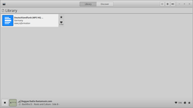
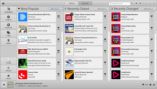
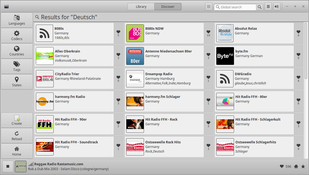
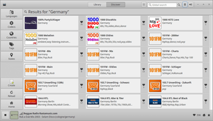
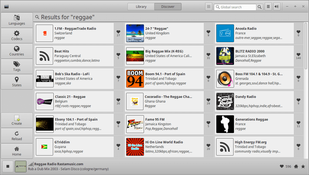

Gradio
Fehlerhafte Anleitung
Diese Anleitung ist fehlerhaft. Wenn du weißt, wie du sie ausbessern kannst, nimm dir bitte die Zeit und bessere sie aus.
Anmerkung: Gradio ist (nur noch) über Flatpak installierbar - Flatpak ist aber in den Ubuntu 16.04 Quellen nicht verfügbar.
Dieser Artikel wurde für die folgenden Ubuntu-Versionen getestet:
Ubuntu 16.04 Xenial Xerus
Zum Verständnis dieses Artikels sind folgende Seiten hilfreich:
Gradio  ist ein Programm zum Auffinden und Abspielen von Internetradios mittels des Multimedia-Frameworks GStreamer. Hervorzuheben ist die extrem einfache Bedienung. Entwickelt wurde das GTK-3-Programm mit der Programmiersprache Vala.
ist ein Programm zum Auffinden und Abspielen von Internetradios mittels des Multimedia-Frameworks GStreamer. Hervorzuheben ist die extrem einfache Bedienung. Entwickelt wurde das GTK-3-Programm mit der Programmiersprache Vala.
Gradio nutzt im Hintergrund das freie und quelloffene Stream-Verzeichnis von radio-browser.info . Dort können neue Stationen eingetragen oder fehlerhafte korrigiert werden. Eine Aufnahmefunktion ist nicht vorhanden. Wer eine solche sucht, wird im Artikel Internetradio aufzeichnen fündig.
Installation¶
 Das Programm ist nicht in den offiziellen Paketquellen enthalten, sondern kann über ein snap Paket installiert werden[1][2]:
Das Programm ist nicht in den offiziellen Paketquellen enthalten, sondern kann über ein snap Paket installiert werden[1][2]:
sudo snap install gradio sudo snap install gnome-3-26-1604 sudo snap connect gradio:gnome-3-26-1604 gnome-3-26-1604
Früher gab es auch ein PPA des Entwicklers, dieses wird aber nicht mehr gepflegt.
Verwendung¶
 Das Programm kann über die Eingabe von "gradio" gestartet werden[3].
Die Bibliothek des Programms ("Library") ist beim ersten Aufruf noch leer. Später stehen hier die vom Nutzer ausgewählten Internetradio-Stationen. Die Schaltfläche "Discover" fasst die im Programm enthaltenen Sender nach folgenden Kriterien zusammen:
Sprache
Codec (MP3, OGG, AAC, usw.)
Land
Genre
Region
Zusätzlich steht ein Suchfeld rechts oben zur Verfügung. Ein Linksklick  spielt den gewünschten Sender ab, ein Rechtsklick
spielt den gewünschten Sender ab, ein Rechtsklick  auf eine Radiostation öffnet eine kleine Leiste, mit der eine Station zur Bibliothek hinzugefügt bzw. entfernt werden kann. Außerdem kann über diese Leiste das Abspielen gesteuert oder die Homepage aufgerufen werden.
auf eine Radiostation öffnet eine kleine Leiste, mit der eine Station zur Bibliothek hinzugefügt bzw. entfernt werden kann. Außerdem kann über diese Leiste das Abspielen gesteuert oder die Homepage aufgerufen werden.
Die Liste verfügbarer Sender wird automatisch heruntergeladen bzw. aktualisiert. Das Hinzufügen eigener Sender ist nicht möglich. Allerdings werden die Sender, die der eigenen Bibliothek hinzugefügt wurden, in der Datei ~/.local/share/gradio/library.gradio im Homeverzeichnis gespeichert und stehen somit beim nächsten Programmstart wieder zur Verfügung.
|  |
| Vorschläge (Discover) |
|  |
| Auswahl nach Sprache |
|  |
| Auswahl nach Land |
|  |
| Auswahl nach Genre |
Einstellungen¶
Die Programmeinstellungen sind über ein Symbol mit drei Querbalken rechts oben in der Titelzeile erreichbar. Alternativ kann der dconf-editor verwendet werden, um den Schlüssel de.haecker-felix.gradio zu bearbeiten.
 Übersichtsseite
Übersichtsseite- Erstellt mit Inyoka
-
 2004 – 2017 ubuntuusers.de • Einige Rechte vorbehalten
2004 – 2017 ubuntuusers.de • Einige Rechte vorbehalten
Lizenz • Kontakt • Datenschutz • Impressum • Serverstatus -
Serverhousing gespendet von